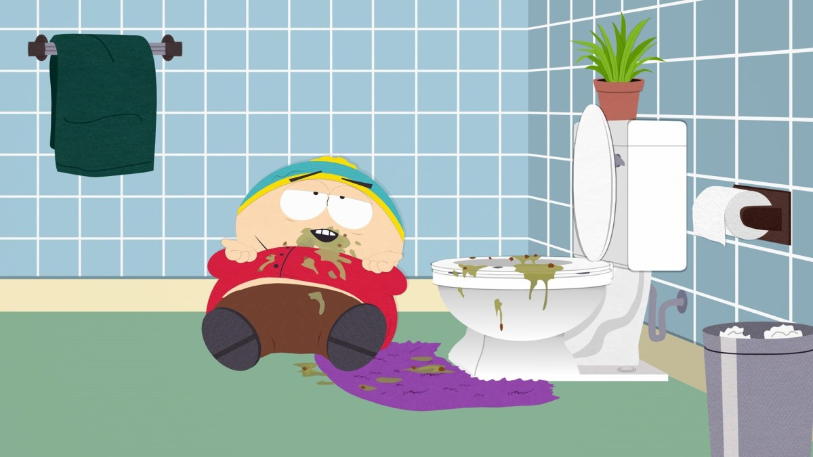
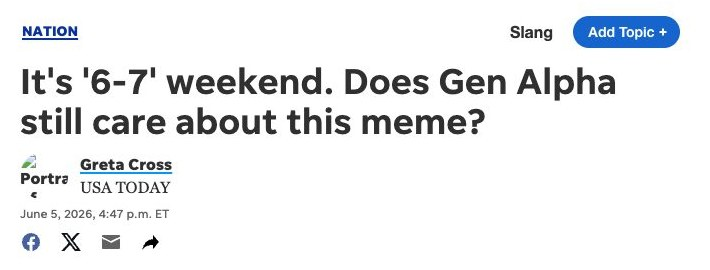

2024–2026
SIX SEVEN「6 7」の歴史
意味は、ない。それでも子どもたちは叫び、教室は揺れた。
たった2つの数字と手のしぐさが、なぜ何百万人を夢中にさせたのか。そして、なぜ大人には最後まで分からなかったのか。
HOMEGUEST
そもそも「67」とは？
「6 7」とは
「シックス・セブン」と読む、ただの2つの数字。言いながら両手のひらを上に向け、天びんのように交互に上下させる。意味は特にない。それ自体が面白さだった。
誰が使ったのか
主にアメリカの小中学生（2010年以降に生まれた「アルファ世代」）。TikTokで広がり、先生が「6ページを開いて」と言うだけで教室中が「シックス・セブン！」と叫ぶほどになった。
このページの見方
グラフのオレンジの番号が、人気を動かした出来事。グラフの番号にマウスを乗せると概要、クリックで詳しいページが開く（スマホは1回タップで概要、カードをもう1回タップで詳しいページ）。
人気の移り変わり
線に並ぶ番号が出来事です。マウスを乗せると概要、クリックで詳しいページへ。
人気度＝Google検索（米国・世界）、YouTube検索、Wikipedia閲覧数（英語・他46言語）、ニュース記事数の6つを合成し、一番高い月を100としたもの。
67の歴史
誕生から頂点まで約10か月、頂点から終息まで約9か月。
出来事の一覧
- 202412月
 01曲「Doot Doot (6 7)」が出回るラッパーSkrillaの曲がネットに出回る。歌詞の「6 7（シックス・セブン）」がすべての始まり。
01曲「Doot Doot (6 7)」が出回るラッパーSkrillaの曲がネットに出回る。歌詞の「6 7（シックス・セブン）」がすべての始まり。 - 20251月頃
 02「ミスター67」誕生高校生バスケ選手がスタバの飲み物を「6、7」と手を上下させて採点。この動画が広まり、身長6フィート7インチのNBA選手ラメロ・ボールの動画にも曲が使われた。
02「ミスター67」誕生高校生バスケ選手がスタバの飲み物を「6、7」と手を上下させて採点。この動画が広まり、身長6フィート7インチのNBA選手ラメロ・ボールの動画にも曲が使われた。 - 20253月03「67キッド」の動画試合会場で少年が「シックス・セブン！」と叫んで手を振る動画が大ヒット。手のジェスチャーが定番になった。
- 20259月
 04新学期で学校中に広がるアメリカの新学期、教室で6や7と言うたびに子どもが「シックス・セブン！」。授業中は禁止する学校も出た。
04新学期で学校中に広がるアメリカの新学期、教室で6や7と言うたびに子どもが「シックス・セブン！」。授業中は禁止する学校も出た。 - 202510月15日

05アニメ「サウスパーク」が取り上げる大人向けアニメで、子どもたちが67に夢中になる回が放送された。 - 202510月29日
 06辞書サイトの「今年の言葉」にDictionary.comが2025年の言葉に「67」を選んだ。アメリカでの人気はここで頂点。
06辞書サイトの「今年の言葉」にDictionary.comが2025年の言葉に「67」を選んだ。アメリカでの人気はここで頂点。 - 202511月
 07企業と大人が使い始めるピザハットやマクドナルドが67にちなんだセールを開始。イギリスの首相まで学校で67のポーズをした。
07企業と大人が使い始めるピザハットやマクドナルドが67にちなんだセールを開始。イギリスの首相まで学校で67のポーズをした。 - 202512月12日
 08「67は終わった」米誌The Atlanticが「67は墓の下。大人が殺した」と書いた。大手メディアが「終わった」と書いた早い例。
08「67は終わった」米誌The Atlanticが「67は墓の下。大人が殺した」と書いた。大手メディアが「終わった」と書いた早い例。 - 20261月1日
 09「ミーム大リセット」年が変わったら古いミームを捨てようという運動がネットで盛り上がり、67も2025年に置いていかれた。
09「ミーム大リセット」年が変わったら古いミームを捨てようという運動がネットで盛り上がり、67も2025年に置いていかれた。 - 20262月5日
 10政治家が使って「ダサい」と笑われるカマラ・ハリス元副大統領がSNSの名前に67を入れ、「ダサい」と笑われて翌日変更した。
10政治家が使って「ダサい」と笑われるカマラ・ハリス元副大統領がSNSの名前に67を入れ、「ダサい」と笑われて翌日変更した。 - 20263月3日
 11「もう死んだ」Yahooの記事で10代が「67はもう死んだ」「古い」と答えた。
11「もう死んだ」Yahooの記事で10代が「67はもう死んだ」「古い」と答えた。 - 20265月16日
 12ローマ教皇も67のポーズバチカンで子どもたちに教わり、ローマ教皇が67のジェスチャーをした。
12ローマ教皇も67のポーズバチカンで子どもたちに教わり、ローマ教皇が67のジェスチャーをした。 - 20266月6〜7日

13「6-7ウィークエンド」6月6日と7日の週末に企業がセール。67の最後の山。 - 20268月〜画像なし14終息夏休みを越えて人気は流行前に近い水準まで落ちた。